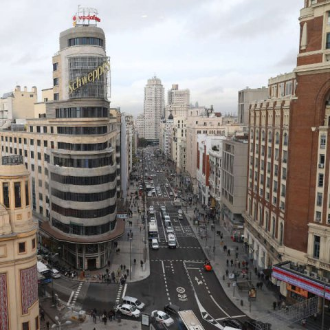
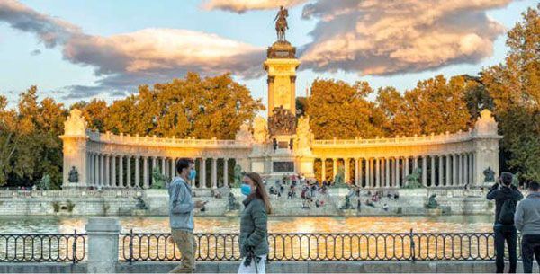

Madrid
Madrid es un municipio y una ciudad de España, con categoría histórica de villa. Constituye la capital del Estado y de la Comunidad de Madrid. En su término municipal, el más poblado de España, viven 3 334 730 personas empadronadas, según el INE de 2020. El área metropolitana asociada tiene una población de 6 779 888 habitantes, la segunda de la Unión Europea, según la fuente, tras la de París, y en otras fuentes detrás también de la Región del Ruhr, así como la segunda ciudad más poblada de la Unión Europea, por detrás de Berlín.
La ciudad cuenta con un PIB nominal de 133 129 millones de euros –el 12% del PIB nacional– y un PIB per cápita nominal de 41 600 € (2018), siendo la 1.ª área metropolitana española en actividad económica ––19% del PIB. Es también la primera en más pernoctaciones hoteleras.
En calidad de capital de España, alberga las sedes del Gobierno de España y sus Ministerios, de las Cortes Generales (Congreso y Senado), del Tribunal Supremo y del Tribunal Constitucional, así como la residencia oficial de los reyes de España y del presidente del Gobierno. En el plano económico, es la cuarta ciudad más rica de Europa, tras Londres, París y Moscú. En 2009, el 50,1 % de los ingresos de las 5000 principales empresas españolas son generados por sociedades con sede social en Madrid, que suponen el 31,8 % de ellas. Es sede del 4.ª mayor mercado de valores de Europa, 2.ª en el ámbito iberoamericano (Latibex) y de varias de las más grandes corporaciones del mundo. Es la 8.ª ciudad del mundo con mayor presencia de multinacionales, tras Pekín y Milán y por delante de Dubái, París y Nueva York.